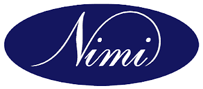
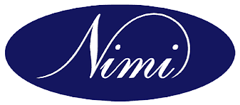
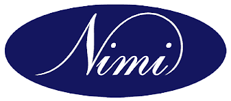

GOVERNMENT OF INDIA
MINISTRY OF SKILL DEVELOPMENT AND ENTREPRENEURSHIP
DIRECTORATE GENERAL OF TRAINING
IARI Employment Exchange Building,
PUSA Complex, New Delhi-110 012. India
 

IARI Employment Exchange Building,
PUSA Complex, New Delhi-110 012. India

How to get the response sheet ?
Step 1: One the Link
Step 2: Enter Roll No. (Please refer to the Hall Ticket to get the Roll No.)
Step 3: Enter Date of birth
Step 4: Enter Exam Date
Step 5: Select Batch (Please refer to the Hall Ticket)
Step 6: Enter the Text and then click Submit